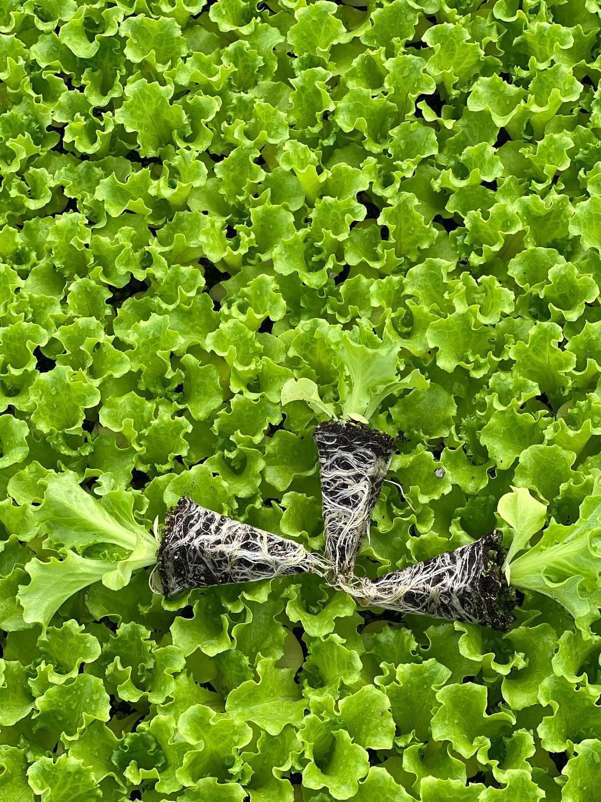
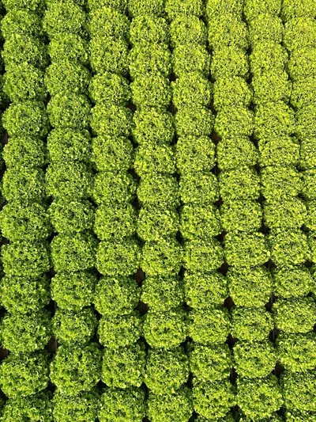
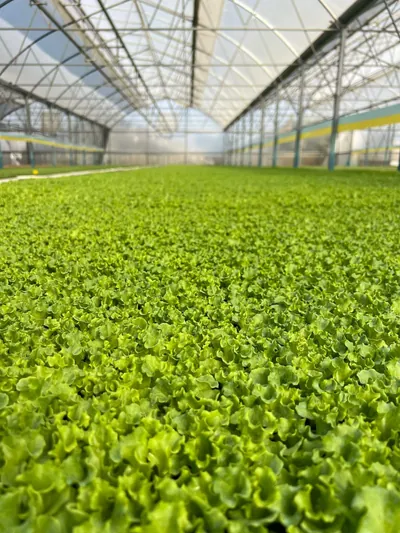
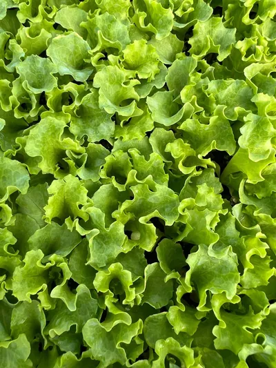

Kanaryole Kıvırcık Marul Fidesi
Fransız Tipi, İnce Tırtıklı ve Parlak Yeşil

Genel Özellikler
| Tip: | Kıvırcık (Gentilina/Fransız) |
| Renk: | Açık ve Parlak Yeşil |
| Yaprak Yapısı: | İnce tırtıklı, gevrek ve lezzetli |
| Hasat Süresi: | Dikimden sonra 45-55 gün |
| Mevsim: | İlkbahar, Sonbahar ve Kış |
Yetiştirme Avantajları
- Sıcağa Dayanıklılık: Geç sapa kalkma özelliği ile uzun süre tarlada bekleyebilir.
- Hastalık Direnci: Marul mildiyösünün (Bremia) birçok ırkına karşı dirençlidir.
- Pazar Değeri: Albenisi yüksek, iri ve ağır baş yapan bir çeşittir.
- Raf Ömrü: Hasat sonrası tazeliğini uzun süre korur.
Yetiştirme İpuçları
- Fide Dikimi: Fideler arası 25-30 cm, sıralar arası 30-35 cm mesafe bırakılmalıdır.
- Toprak İsteği: Organik maddece zengin, süzek ve nem tutma kapasitesi yüksek toprakları sever.
- Sulama: Düzenli sulama, yaprakların gevrekliği ve acılaşmaması için kritiktir.
- Gübreleme: Azot ağırlıklı gübreleme yaprak gelişimini hızlandırır.
Görsel Galeri


